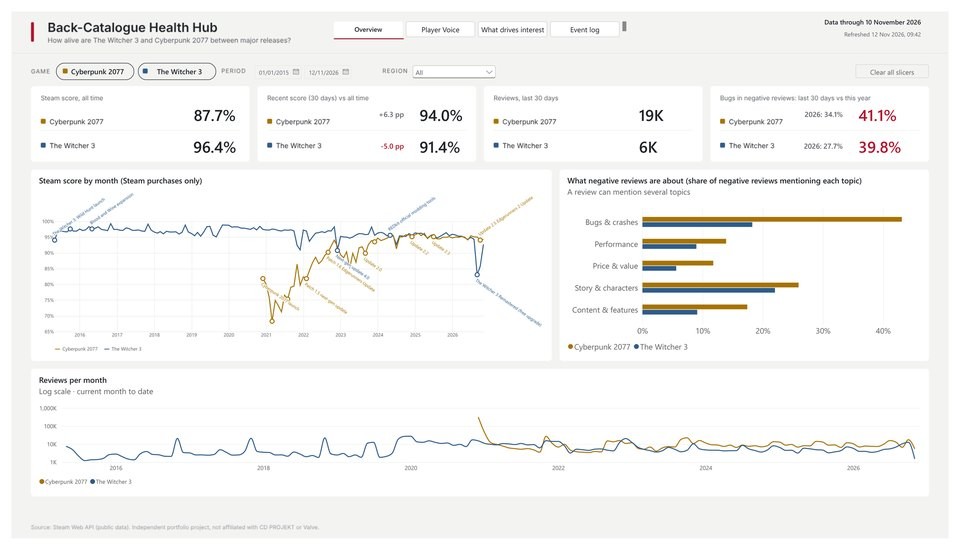

CD PROJEKT Back-Catalogue Health Hub
QuestionWhich events move player interest and sentiment for The Witcher 3 and Cyberpunk 2077?
HowGitHub Actions → PostgreSQL + dbt → Power BI model with RLS, a calculation group and BPA checks in CI.
ResultTechnical overhauls cost up to −17.6 pp of Steam score; content updates lift activity up to +457%.
- 4.9M reviews
- 125 data tests
- 51 events vs control group
- RLS + OLS